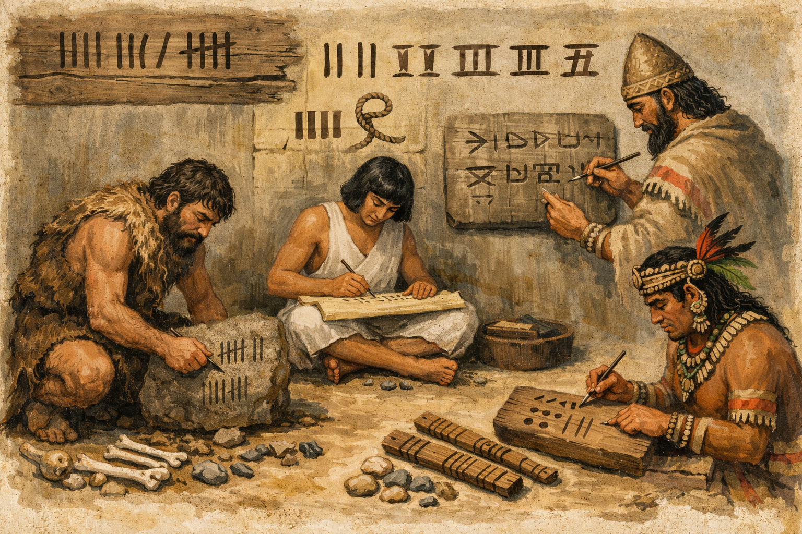
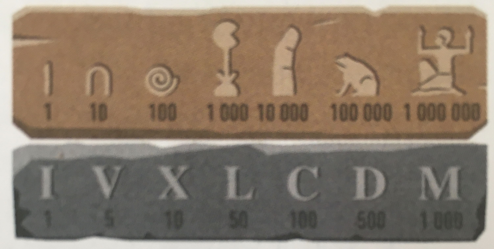
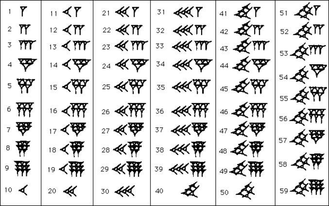
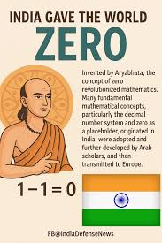
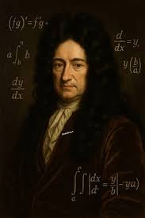

De la préhistoire aux ordinateurs : comment les humains ont appris à représenter les nombres ?
Vous etes actuellement dans la page 'Accueil'
Depuis toujours, les humains ont besoin de compter : pour échanger, mesurer et organiser. Les systèmes de numération ont beaucoup évolué au fil du temps pour devenir plus efficaces.
Les premières civilisations utilisaient des systèmes simples pour compter, comme des traits ou des symboles. Chaque peuple avait son propre système, souvent difficile à utiliser pour des calculs complexes.

Ces systèmes étaient efficaces pour écrire des nombres, mais compliqués pour effectuer des calculs.

Les Babyloniens introduisent une idée essentielle : la position d'un chiffre change sa valeur. C'est une avancée majeure qui rend les nombres plus puissants et plus flexibles.

En Inde, les mathématiciens inventent le système décimal avec le zéro. Ce système permet enfin de faire des calculs facilement — c'est la base du système que nous utilisons aujourd'hui.

Leibniz propose un système basé uniquement sur 0 et 1 : le binaire. Aujourd'hui, les ordinateurs utilisent ce système car il correspond à deux états électriques (allumé / éteint).

En informatique, l'information est mesurée en bits. Un bit ne peut prendre que deux valeurs : 0 ou 1. Les technologies modernes permettent de stocker des milliards de bits dans un espace très réduit.